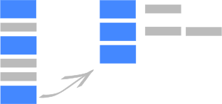

gridscrolling.js
Have an article with a clear structure, but lots of <aside>?
Meet gridscrolling.js, your new best friend!
Visit the github page for the code.
Press arrow down, for more info.
First Comes First

You focus on your article. Section following section, and asides in between.
gridscrolling.js takes care of layouting, by giving you a clear path thru the mains, and the easy option to dig in the asides if wanted.
Navigation
Have a look at the top and bottom: An arrow indicates if cursor keys can be used to skip to the next section.
An arrow on the right-hand side means, there is an aside to explore.
Go have a look by pressing the right-arrow key.
You don't have Javascript enabled?
No worries! Degrading with style, the article can be read linearly (almost) as nice.
Your links work just as well as in the 90s.
How to Use
- Get jQuery
- Get the
.js and the .css file from github.
- Include them in your page.
- When the document is loaded and ready, initialize gridscrolling.js (see snippet)
Tailoring
Style the looks of the overview map or the arrows to blend in.
Javascript options can be used to customize gridscrolling.js behavior according to your needs.